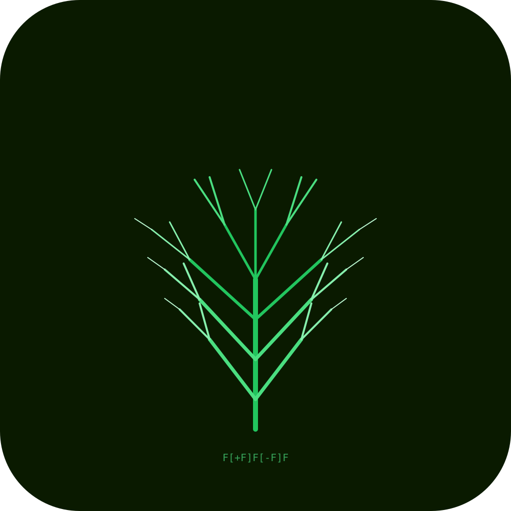
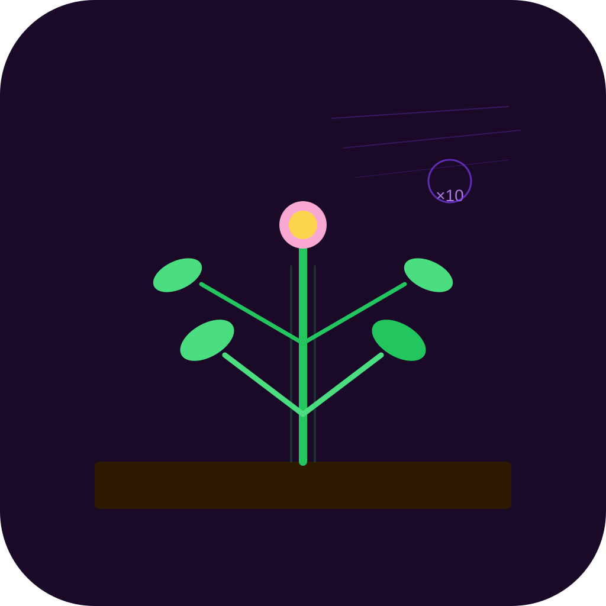
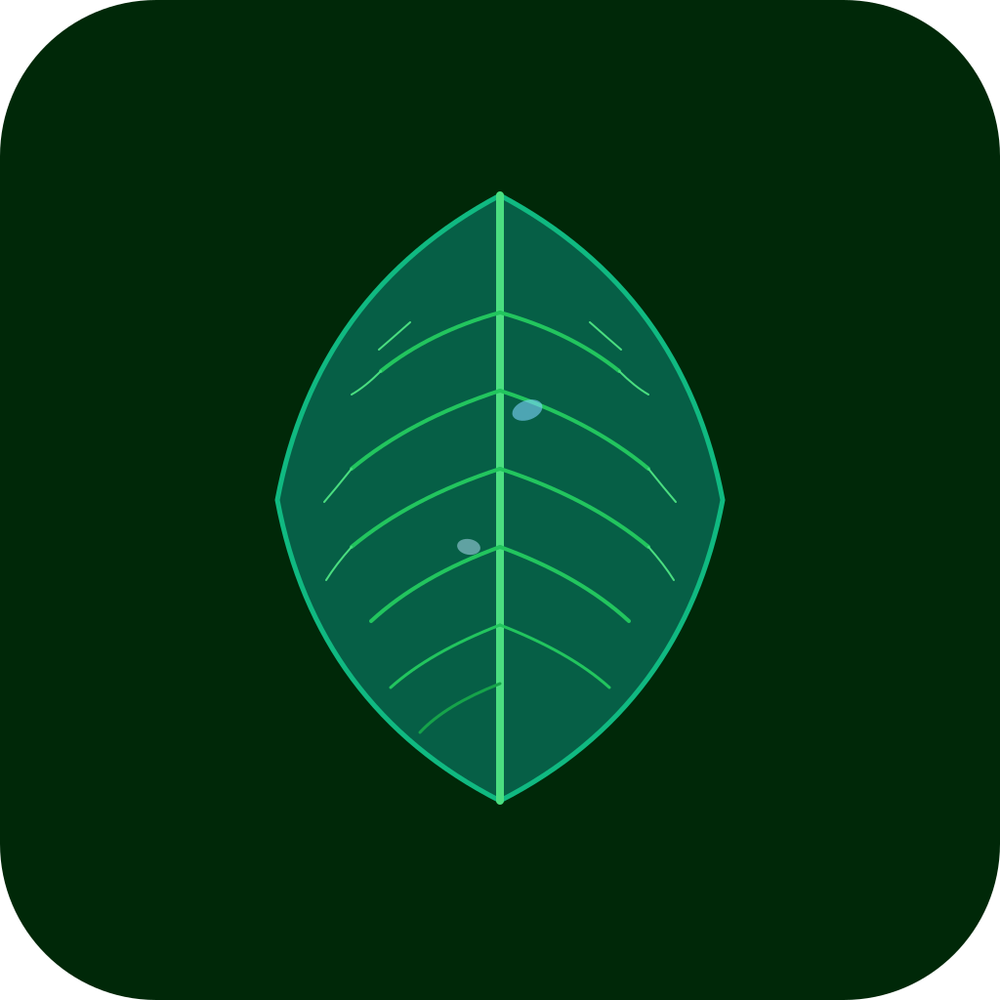
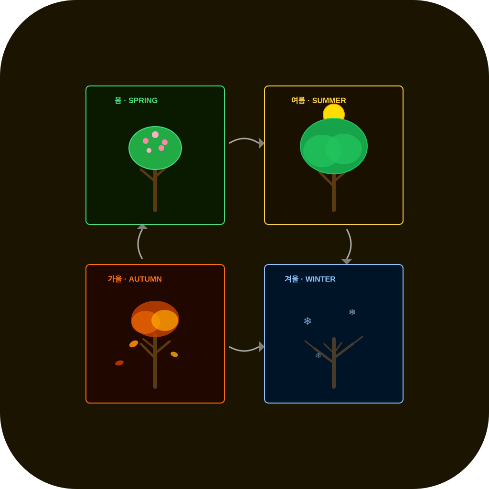
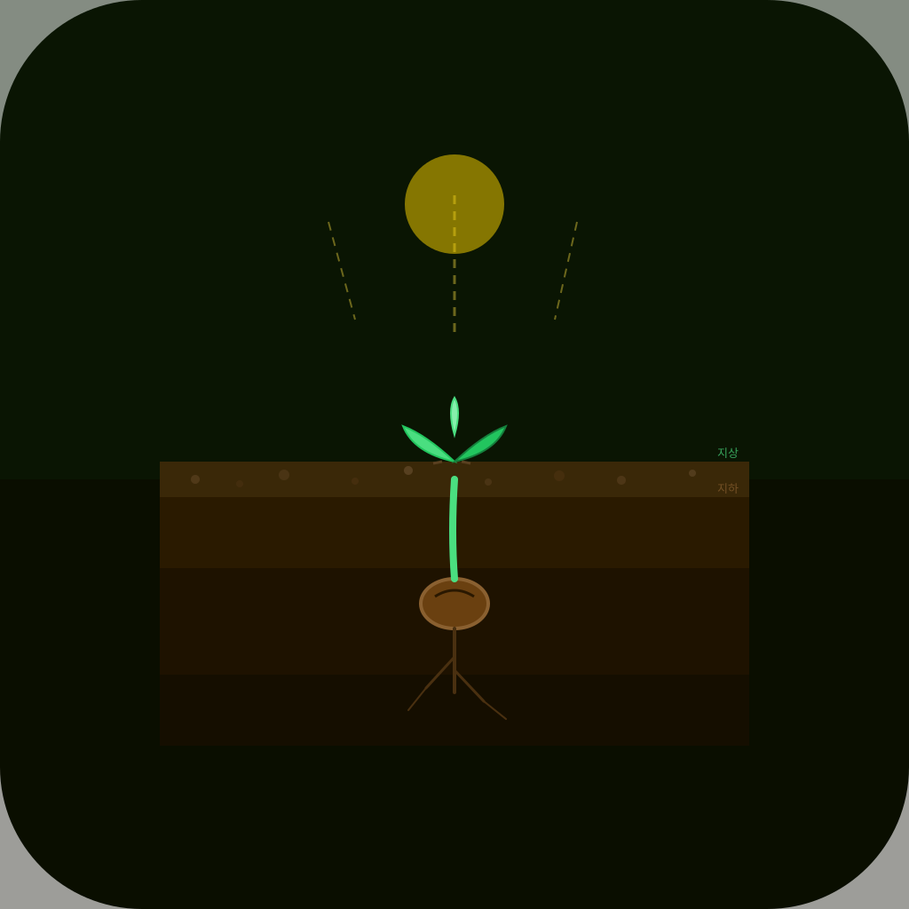
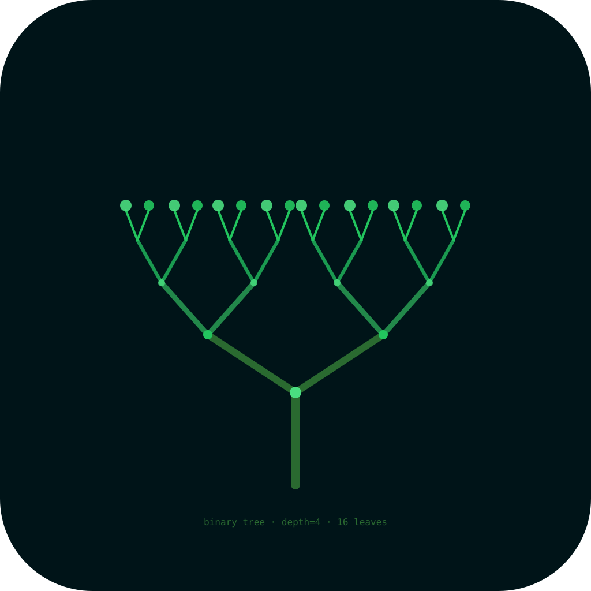
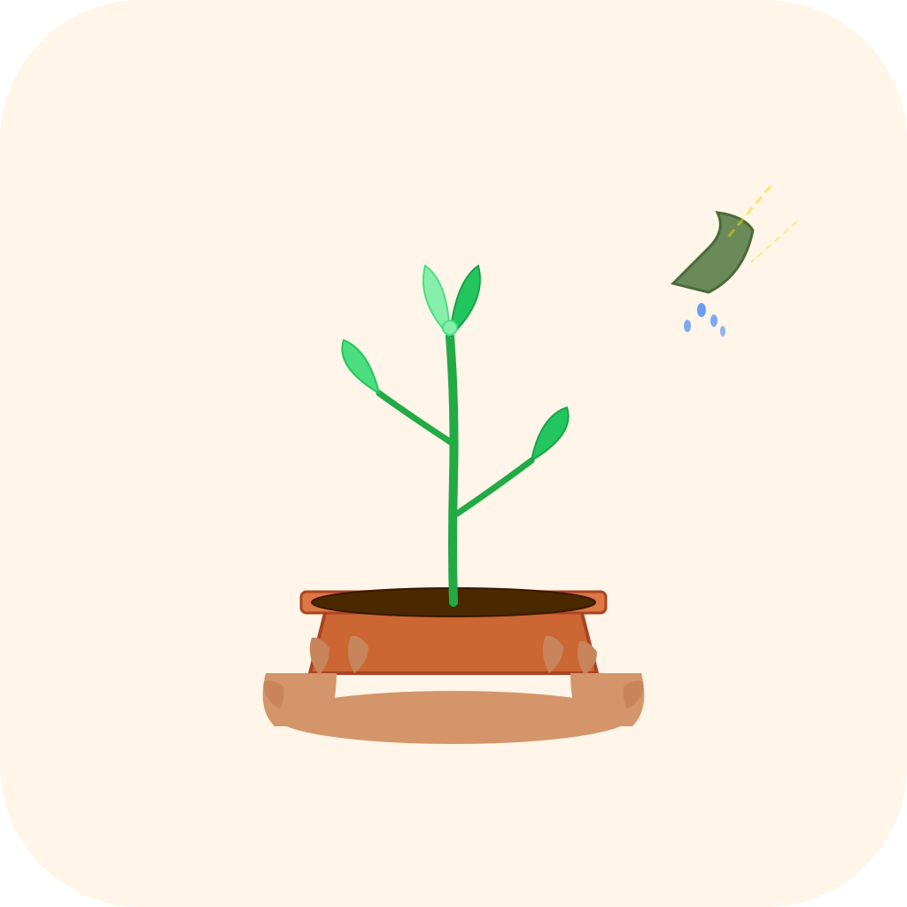

icon_01.svg
프랙탈 고사리 L-시스템
#0A1A00 · #4ADE80 · #22C55E

icon_02.svg
타임랩스 성장 잔상
#1A0A28 · #4ADE80 · #A78BFA
icon_03.svg
이끼 돌 — 자연 서식지
#0A1410 · #22C55E · #8B4513

icon_04.svg
잎맥 패턴 — 주맥/측맥
#002808 · #4ADE80 · #22C55E

icon_05.svg
계절 사이클 4계절 변화
#1A1400 · #4ADE80 · #FFD700

icon_06.svg
씨앗 발아 — 땅속 단면
#0A1000 · #4ADE80 · #FFD700

icon_07.svg
가지 분기도 — 이진 트리
#001418 · #4ADE80 · #22C55E

icon_08.svg
정원사 손 — 식물 돌봄
#FFF5E8 · #22C55E · #D4956A